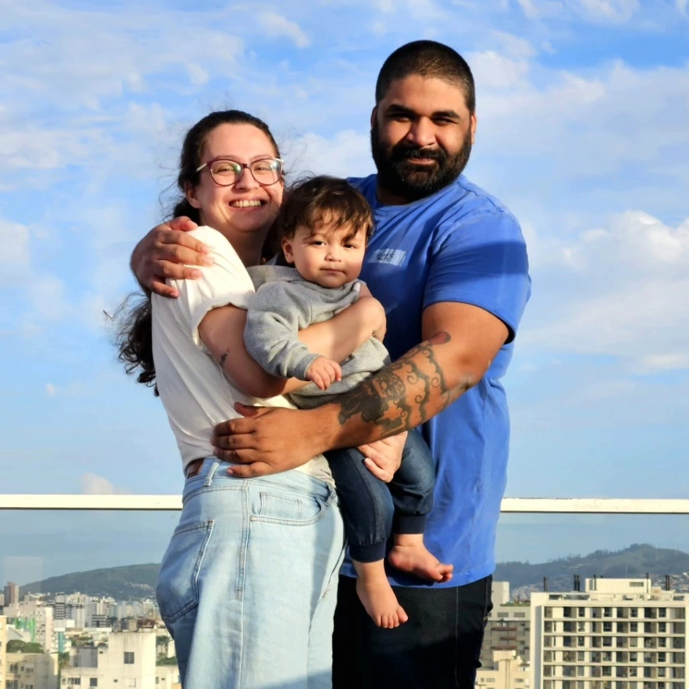

Olá, meu nome é Peterson Portella. Sou aspirante a desenvolvedor front-end, formado em Desenvolvimento de Software e técnico em informática.
Minha experiência acadêmica abrange desde a desenvolvimento de aplicativos até a solução de problemas técnicos e manutenção de sistemas.
Busco minha primeira oportunidade profissional, para aplicar meus conhecimentos e habilidades em um ambiente real de trabalho.
Estou ansioso para contribuir com soluções inovadoras e eficazes, enquanto continuo a aprender e crescer na área de tecnologia.
Amo meu filho, minha familia e tecnologia, nessa ordem, tento ser o heroi que o meu filho acha que eu sou. Sou apaixonado por basquete e cachorro.
